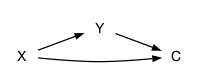

Chapter 13 Remember, inference isn’t everything
A famous calculus textbook exercise provides a helpful perspective on how mathematical formulations can get something exactly right while at the same time getting it hopelessly wrong. The exercise is about tin cans and asks what is the best height and circumference of a cylinder that encloses a specified volume while using a minimum of material in the package.
The tin-can problem has an exact solution; there is a specific combination of height and circumference that does the job. But that solution is also wrong because it ignores most of the real-world aspects of the problem. For instance, tin cans have a crimped edge on top, which consumes material while not contributing to volume. As well, in cutting out the circular caps for the can, material is wasted: the unused interstices between circles. And there is the thickness of the material, which needs to be strong enough to resist puncture and crushing, perhaps calling for horizontal corrugations in the cylinder. Manufacturability is an issue: there’s a reason why the paper-and-foil “sanipacks” are a rectangular prism rather than a cylinder. Then there is the question of why the volume is being set at the specified value, as well as myriad other considerations: the feel of the can in the hand and the pourability of the shape (which can argue for a can that’s wider than it is deep), the suitability for being opened with conventional can openers, the desire to make a marketing statement with a distinctive shape, the efficiency with which the can uses the available space in shipping containers, stackability and stockability on supermarket shelves, and so on. Certainly the cost of the can material should come into play – if material is cheap and the contents are expensive, perhaps advertising and marketing considerations trump a theoretical optimality of shape.
Now let’s talk about statistics. The roots of classical inference are in problems of astronomy and geodesy: how to combine varying measurements to get the best estimate of the position of a planet or the length of a line of longitude, and how to figure out how precise that estimate is. Combining lots of individual measurements means that the “normal” distribution is relevant. But it’s a stretch to think that combining three measurements of a dodgy biological quantity should be interpreted in the same way. And, when the subject of study is variation between individuals, it’s odd to focus student attention on central estimates–mean, median–rather than on extremes.
However nice the mathematics of classical inference, there are real-world conditions that need to be taken into account: the appropriate use of covariates, the many choices made by researchers in shaping the algorithm used to calculate the reported quantity, the relative cost and importance of an error of one type versus an error of the other type.
Classical inference–certainly that presented in introductory statistics–is shaped by one concern and one concern only: how to deal with the variation introduced by random sampling or assignment. When data are very limited, it may sometimes be that sampling variation is the largest contributor to error. But when data are plentiful, the many other considerations become more pressing. In today’s world, data are often cheap, like tin plate. Optimizing a statistical design to minimize the need for data is much like insisting on an optimally cylindrical can despite all the other objectives involved in marketing, storing, and shipping food.
In my view, our statistical curriculum has been much too dismissive of the human factors in interpreting and using statistical results. To inform decision makers, many of whom have negligible quantitative skills, the analysis needs to be plausible and compelling. There needs to be a believable way to demonstrate that an approach is correct: appealing to algebra and textbook expertise does not necessarily accomplish what’s needed. Real-world costs and benefits need to be quantifiable, something quite different than declaring a significance threshold of 0.05 (and, even then, substantially ignoring the issue of statistical power). And if causality is the motivating factor, we need to provide tools for students to take causality seriously.
It’s a shame that a narrow consideration of sampling variation came to capture the word “inference,” as if sampling variation were the only object of statistical reasoning. Of course it’s not, and as a reminder in this chapter I’ll look briefly at three matters that ought not be ignored when trying to draw inferences about the world from data: substantiality, unobserved confounders, and the lessons from the last quarter century’s work on causality.
13.1 Substantiality
Consider this claim on a patient-oriented medical website6 about statins, a class of drugs used to improve cholesterol levels in people:
- Statins quickly reduce LDL, the “bad,” cholesterol by 50% or more.
- Statins boost HDL, the “good” cholesterol, by up to 15%.
A statistical educator might point out that these statements lack a supporting inferential claim. The everyday English qualifiers “or more” and “up to” are an informal way of indicating that there is some uncertainty, but statisticians might prefer a confidence interval, say that LDL is reduced by 50% ± 10%.
What does the ±10% bring to our interpretation? Perhaps it suggests that most statin-takers see a reduction in the range 40-60%. That’s wrong. Knowing the confidence interval puts no bound on the distribution of individual responses. The interval 40-60% is perfectly compatible with some people seeing an increase in LDL. Wouldn’t it be better to report something like “70% of statin takers see a reduction of 25% or more in LDL levels?” On the other hand, what’s special about 25%? Or 50% for that matter?
Presenting the LDL reduction in an informative way needs to be based on how important or substantial is that reduction. For instance, here is a report from the Journal of the American College of Cardiology:
Among rosuvastatin-allocated participants, 3,640 individuals (46.3%) experienced an LDL-C reduction ≥50%; 3,365 individuals (42.8%) experienced an LDL-C reduction >0 but <50%; and 851 individuals (10.8%) experienced no reduction or an increase in LDL-C compared with baseline.
The report goes on to link the reduction in LDL to an outcome that people might reasonably care about: avoiding “cardiovascular events” (CVE). The results:
- placebo group: 11.2 events per 1,000 person-years
- statin-taking group
- no reduction in LDL: 9.2 events per 1,000 person-years
- reduction less than 50%: 6.7 events per 1,000 person-years
- reduction greater than 50%: 4.8 events per 1,000 person years.
Comparing each of the statin-taking subgroups to the placebo produces a “hazard ratio,” which is
- no LDL reduction: 0.91 (95% CI 0.54–1.53)
- less than 50% reduction: 0.61 (95% CI, 0.44–0.83)
- greater than 50% reduction: 0.43 (95% CI, 0.30–0.60)
The confidence intervals are important tools. Here, they tell us that CVE risk is reduced (on average) for people with LDL reduction. They also indicate little reason to think the less than 50% subgroup is different from the greater than 50% subgroup.
But let’s return to the events per 1,000 person years. Those are odd-sounding units, so it might be tempting to favor the hazard ratios. But in terms of the impact of statin-taking on human health, the event rate is more telling. A reduction of 50% in LDL is associated with a change in event incidence of about 5 per 1,000 person-years or, equivalently, 1 per 200 person-years. Of course, nobody takes a statin for 200 years, but the number is still informative. Assuming people take statins for 10 years, the results suggest that a group of 20 people taking statins successfully would avoid one cardiovascular event; in other words, the “number needed to treat” is twenty.
It’s fair to consider the “number needed to treat” as the substance of the effect on CVE of taking statins (at least in those who respond with a lowering in LDL). Of course there are other effects of statins that need to be balanced against the observed reduction in CVE when making a clinical decision.
Only with a handle on the substantiality of the effect of statins, not just the statistical significance, are you in a position to judge translations of the science into everyday recommendations. Going back to the patient-facing web site at the start of this section, what does the substance suggest about the value of this interpretation: “`Statins are very simple: You take them once a day, and their effects are quite profound,’ says Patrick McBride, MD, MPH, director of the cholesterol clinic at the University of Wisconsin School of Medicine and Public Health.” Maybe not so simple or profound after all.
It can be difficult for students or instructors to determine what kind of effect is substantial in any given context. Still, students should be exposed to formats for expressing substance (like “number needed to treat”) and to look for substance-related claims (or the lack thereof) when interpreting statistical studies.
13.2 Causal reasoning
Traditionally, introductory statistics courses emphasize the idea that “correlation is not causation.” This is only true in the sense that knowing that there is a correlation between X and Y does not tell you which way the direct causal link between X and Y, if any, goes.
I prefer to say that “correlation is causation.”
| (a) | (b) | (c) | (d) |
|---|---|---|---|
| X \(\rightarrow\) Y | X \(\leftarrow\) Y | X \(\leftarrow\) C \(\rightarrow\) Y | X \(\rightarrow\) C \(\leftarrow\) Y |
There are other possibilities that are variations on (c) and (d) with a causal connection between X and Y, for instance networks (e), (f), and (g):
| (e) | (f) | (g) |
|---|---|---|
 |
 |
 |
Data can help narrow down the possibilities. For instance, network (c) will produce data where Y is independent of X when adjusted for C but where X and Y are correlated when C is ignored. Conversely, network (d) produces X independent of Y when C is ignored, but correlated when adjusting for C.
If the goal is to study the possible causal relationship between X and Y, then in network (e) C should be ignored, in network (f) C should be adjusted for, and in network (g) C should be ignored.
It’s often the case that people have preferred hypotheses about what causes what. It’s important to carry out the analysis that corresponds correctly to your hypothesis. Even when there is disagreement over hypotheses, the discussion can be moved along by comparing the correlations found in the data (e.g. X and Y, conditioned on C) and checking whether they are consistent with the various hypotheses.
The role of randomized assignment in experiment is to create a network with known properties about which reasonable people will agree.7 For instance, if C is the random assignment to X of drug or placebo, we can be sure that X doesn’t cause C and similarly that Y doesn’t cause C.
In the language of econometrics, a C that reflects randomized assignment is called an “instrumental variable.” In the absence of experiment, sometimes it’s possible to find an instrumental variable created naturally, a setting which gives strong credibility to causal claims deduced from observational data. Understanding the legitimate possibilities for causal reasoning from observational data can help students distinguish between causal claims that warrant belief and those that are undeserving.
13.3 Confounding
The phrase “lurking variable” is used to warn students of the possibility of a hidden, perhaps unknown variable creating a spurious correlation, that is a correlation that is not dispositive of a causal relationship. Unfortunately, the possibility of lurking variables can lead to a kind of statistical nihilism, where any claim can be rejected based on the mere assertion of a possible lurking variable.
Actually, it is possible to get a handle on how much influence a plausible lurking variable can have on a statistical claim of causal connection. Jerome Cornfield led the way here in 1959. The setting was the well-established association between smoking and lung cancer. Famously, Ronald Fisher asserted that the association could not be treated as a causal connection. He speculated that there could be a genetic lurking variable that is a common cause for both smoking behavior and lung cancer. In the notation of networks, the hypothesized genetic variable plays the role of C in network (f) above, with X being smoking and Y lung cancer. In order properly to study the possible effect of X on Y, it’s necessary to adjust for C. But genetic science in 1959 offered little guidance about what the lurking gene might be and therefore no way to measure it and adjust for it.
Cornfield realized that there might, nonetheless, be something to say. He wrote:
If an agent, A, with no causal effect upon the risk of a disease, nevertheless, because of a positive correlation with some other causal agent, B, shows an apparent risk, r, for those exposed to A, relative to those not so exposed, then the prevalence of B, among those exposed to A, relative to the prevalence among those not so exposed, must be greater than r. – Cornfield J et al. Smoking and lung cancer: recent evidence and a discussion of some questions. JNCI 1959;22:173–203. Reprint available here.
In the context of smoking and cancer, Cornfield’s A is smoking and B is the hypothesized genetic common cause of smoking and cancer. The observed risk ratio for lung cancer between smokers and non-smokers was about 9. As such, both the risk ratio for the link between cancer and the lurking gene and the risk ratio between smoking and the lurking gene would need to be greater than 9. Such strong links between genetics and complex phenotypes8 would be exceptional. Cornfield’s realization tipped the genetics hypothesis into the trash can of history.
To mitigate the statistical nihilism of lurking variables, we can pose a mathematical question. Suppose that some plausible lurking variable C might has a correlation of R2 with X and also with Y. (For simplicity, we’ll assume the same R applies to C \(\rightarrow\) X and to C \(\rightarrow\) Y.) A correlation corresponds to a geometrical alignment. If C is aligned with X, and C is aligned with Y, we can examine the consequences for the possible alignment of X and Y.
If the R2 of the lurking variable with the variables of interest is very small, then possible confounding can only be weak. If we see a strong relationship between X and Y, only a small part of that can be attributed to confounding. On the other hand, if the R2 of the lurking variable with X and with Y is large, and the observed relationship between X and Y is weak, it seems reasonable to dismiss the X-Y relationship as the product of confounding.
I’ve put together the geometry of such mutual alignments in a format that I’ll call the “confounding interval.” The confounding interval depends both on the strength of the X-Y relationship and on the lurking C-X and C-Y relationships. In marked contrast to a confidence interval, the confounding interval does not depend on the sample size.
Figure 13.1: Figure 13.1. A confounding interval. Three bands are shown, each a function of the observed correlation between X and Y. The narrowest band corresponds to a weak lurking R2 of 0.04, the largest to a comparatively strong lurking R2 of 0.35. The upper and lower bounds of each band are to be multiplied by the observed X-Y effect size, giving a range of effect sizes that are plausible outcomes from the suspected confounding.
To illustrate, suppose that observed X-Y data indicates points to a relationship with \(\mbox{R}^2_{XY} = 0.1\) and an effect on Y with respect to X of \(B\). (For large sample sizes, the confidence interval on \(B\) will be vary narrow. We’ll assume that the confidence interval is well away from zero.
We suspect that, to some extent, the observed effect size might be influenced by a lurking variable. Since the lurking variable is unobserved and unknown, there’s no way to know what is its actual alignment with X and Y. But we can establish a policy of caution based on the amount of intellectual work we have done to rule out unknown confounders. Perhaps like this:
- Did a perfect experiment? Use \(\mbox{R}^2{CX} = 0\).
- Did a real experiment? Use \(\mbox{R}^2{CX} = 0.04\).
- Know a lot about the system you’re observing and confident that the significant confounders have been adjusted for? Use \(\mbox{R}^2{CX} = 0.08\).
- Not sure what all the confounders might be, but controlled for the ones you know about? Use \(\mbox{R}^2{CX} = 0.16\).
- Got some data and you want to use it to figure out the relationship between X and Y? Use \(\mbox{R}^2{CX} = 0.35\).
Suppose we’re in intellectual situation (5); we haven’t given any thought to possible confounding variables. We have observed an effect size–say, a regression slope and its confidence interval–of, say, 10 ± 3 y-units/x-units. At \(\mbox{R}^2_{XY} = 0.1\) the appropriate upper and lower bounds are about -0.2 to 1.2. The confounding interval on the effect size will therefore be \(-0.2 \times 10\) to \(1.2 \times 10\), with an additional ±3 at each end. In other words, the confounding interval will be -5 to 15, much wider than the confidence interval of 7 to 13. Without giving thought to possible confounding variables, we’re not in a position even to say that the effect size is different from zero.
In intellectual situation (4), in contrast, the upper and lower bounds of the band are 0.3 to 0.95. Correspondingly, the confounding interval will be \(0.3 \times 10\) to \(0.95 \times 10\), with the additional ±3 from the confidence interval. Altogether, that’s a confounding interval of 0 to 12.5.
In situation (3) the confounding interval will be 6 to 10, with the additional ±3 from the confidence interval, giving 3 to 13.
Note that if the observed \(\mbox{R}^2_{XY}\) is large, the confounding interval would be smaller than in the previous examples. Notice also that unknown confounding pulls the interval toward a weaker relationship than that naively observed.
13.4 The stars of statistical inference
A typographical convention in reporting p-values uses stars. One star stands for \(p < 0.05\), two stars for \(p < 0.01\), and three stars for \(p , 0.001\). As a quick way to guide the eye, this is not a bad convention. But it falsely suggests that the p-value is the measure of statistical quality. In the Michelin restaurant ratings, for instance, a one-star restaurant is remarkable and a three-star restaurant excels by a global standard.
To move toward a more comprehensive evaluation of statistical claims, I propose a revision to the star system.
Let’s start by insisting that there be some meaningful statement of the smallest effect size worth mentioning (SEWM). This should be a non-zero value and justification should be given about the practical import of such an effect. This will, of course, depend on the context. The effect of a drug that reduces blood pressure on average by 1 mmHg in a large experimental group will be undetectable in individuals: not worth mentioning.
So one star for an effect size whose confidence interval has both bounds exceeding the SEWM.
Let’s award a second star when a statistical analysis has appropriately considered covariates.
A third star when causal reasoning has been applied appropriately and when a confounding interval reported.
A fourth star for a result based on experiment or a convincingly established instrumental variable.
Finally, a fifth star when the result has been independently confirmed.
With this scale, the kinds of non-experimental results often found in typical introductory statistics book won’t earn even a single star, simply because they lack the minimal connection to the real world created by establishing the smallest effect worth mentioning.